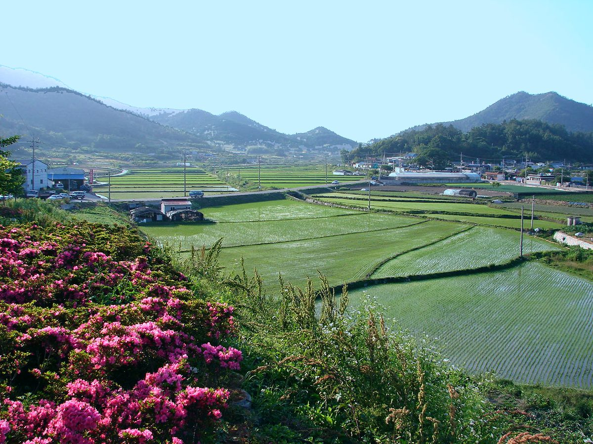

에너지협동조합 활동가 40명, 고흥 주민참여 수상태양광·나주 한전KDN 찾아 계통 접속·계획입지 속 시민참여 공부

한국에너지정보문화재단·시민발전이종협동조합연합회, 11월 2~3일 전남 여수·고흥·나주 일대서 역량강화 교육…'100GW 계획입지 이행체계와 시민참여' 강의도
전국 에너지협동조합의 임직원과 조합원 등 활동가 약 40명이 11월 2~3일 전남 여수·고흥·나주 일대에서 전력망 접속과 재생에너지 계획입지 과정에서 협동조합이 맡을 역할을 주제로 현장 교육을 받았다. 교육은 한국에너지정보문화재단과 시민발전이종협동조합연합회가 함께 연 '2026 지역사회 에너지·탄소중립 역량강화' 프로그램이다. 참가자들은 첫날 고흥 해창만 수상태양광을 찾아 주민참여형 발전설비가 어떻게 운영되는지 살펴보고 재생에너지 기본계획과 정책 과제에 관한 특강을 들었다. 둘째 날에는 '100GW 계획입지 이행체계와 시민참여'를 주제로 재생에너지 보급 과정에서 시민이 참여할 방법과 협동조합의 제도적 대응을 논의했고, 나주 한전KDN에서 전력ICT 기반 계통 운영시스템을 견학하며 분산에너지 확대에 따른 전력망 유연성과 발전설비 계통 접속 현안을 짚었다. 이주수 한국에너지정보문화재단 대표이사는 전력계통 포화와 입지 규제 같은 현장의 난제를 풀려면 "시민협동조합과의 긴밀한 연대가 필수적"이라며 지역 에너지 거버넌스와 신뢰를 바탕으로 한 에너지 소통을 지원하겠다고 밝혔다.
시민에너지 관점
유럽에서는 각국 에너지협동조합이 연합체 REScoop.eu로 모여 조합 설립과 출자 모집, 계통 연결, 제도 대응의 경험을 서로 나누면서 작은 조합도 큰 사업을 감당할 힘을 길러 왔다. 이번 교육이 설비 보급에 그치지 않고 계통 접속과 계획입지라는, 지금 시민 발전소가 가장 많이 막히는 곳을 함께 다룬 것은 그래서 의미가 있다. 계통이 꽉 찬 상황에서 협동조합이 배운들 무엇을 할 수 있느냐는 물음도 있지만, 계통 운영과 입지 제도를 아는 조합이어야 계획입지 논의에 주민 몫과 접속 순서를 요구하는 당사자로 설 수 있다. 정부와 공공기관은 이런 교육을 한 번의 행사로 끝내지 말고, 계획입지 지구를 정하는 과정에 지역 협동조합이 처음부터 참여하는 자리를 제도로 만들어야 한다.
출처: 한국원자력신문 2026-11-03 임형준 기자 원문 보기
출처: 인사이트에너지뉴스 2026-11-03 김병욱 기자 원문 보기
エネルギー協同組合の活動家40人、高興の住民参加型水上太陽光と羅州の韓電KDNを訪ね、系統接続と計画立地の中の市民参加を学ぶ
韓国エネルギー情報文化財団と市民発電異種協同組合連合会、11月2〜3日に全羅南道麗水・高興・羅州一帯で研修…「100GW計画立地の履行体制と市民参加」の講義も
韓国各地のエネルギー協同組合の役職員や組合員ら活動家約40人が11月2〜3日、全羅南道の麗水・高興・羅州一帯で、電力網への接続と再生可能エネルギーの計画立地の過程で協同組合が担う役割をテーマに現場研修を受けた。研修は韓国エネルギー情報文化財団と市民発電異種協同組合連合会が共同で開いた「2026 地域社会エネルギー・カーボンニュートラル力量強化」プログラムだ。参加者は初日、高興の海倉湾（ヘチャンマン）水上太陽光を訪れて住民参加型の発電設備がどのように運営されているかを見て回り、再生可能エネルギー基本計画と政策課題に関する特別講義を聴いた。2日目は「100GW計画立地の履行体制と市民参加」をテーマに、再生可能エネルギー普及の過程で市民が参加する方法と協同組合の制度的な対応を議論し、羅州の韓電KDNでは電力ICTを基盤とする系統運用システムを見学して、分散型エネルギーの拡大に伴う電力網の柔軟性や発電設備の系統接続をめぐる課題を確認した。韓国エネルギー情報文化財団のイ・ジュス代表理事は、電力系統の飽和や立地規制といった現場の難題を解くには「市民協同組合との緊密な連帯が不可欠だ」と述べ、地域のエネルギーガバナンスと信頼に基づくエネルギーコミュニケーションを支援していくとした。
市民エネルギーの視点
欧州では各国のエネルギー協同組合が連合体REScoop.euに集まり、組合の設立や出資募集、系統接続、制度への対応の経験を互いに共有しながら、小さな組合でも大きな事業を担える力を養ってきた。今回の研修が設備の普及にとどまらず、いま市民発電所が最もつまずいている系統接続と計画立地を併せて扱ったことには、その点で意味がある。系統が満杯の状況で協同組合が学んで何ができるのかという疑問もあるが、系統運用と立地制度を理解している組合であってこそ、計画立地の議論で住民の取り分と接続の順番を求める当事者になれる。政府と公共機関はこうした研修を一度の行事で終わらせず、計画立地の地区を決める過程に地域の協同組合が最初から参加できる場を制度として設けるべきだ。
出典: 韓国原子力新聞 2026-11-03 イム・ヒョンジュン記者 原文を読む
出典: インサイトエネルギーニュース 2026-11-03 キム・ビョンウク記者 原文を読む
40名能源合作社骨干走访高兴居民参与型水上光伏和罗州韩电KDN，学习并网与规划选址中的市民参与
韩国能源信息文化财团与市民发电异种合作社联合会11月2日至3日在全罗南道丽水、高兴、罗州一带举办能力建设培训…还开设"100GW规划选址实施体系与市民参与"讲座
来自韩国各地能源合作社的职员和社员等约40名骨干，11月2日至3日在全罗南道丽水、高兴、罗州一带参加现场培训，主题是合作社在接入电网和可再生能源规划选址过程中应承担的角色。培训是韩国能源信息文化财团与市民发电异种合作社联合会共同举办的"2026地区社会能源与碳中和能力建设"项目。参加者第一天前往高兴海仓湾水上光伏电站，了解居民参与型发电设施的运营方式，并听取了关于可再生能源基本计划与政策课题的专题讲座。第二天围绕"100GW规划选址实施体系与市民参与"，讨论了可再生能源推广过程中的市民参与途径和合作社的制度应对，并在罗州韩电KDN参观了基于电力ICT的电网运行系统，研判分布式能源扩大带来的电网灵活性和发电设施并网问题。韩国能源信息文化财团代表理事Lee Ju-su表示，要解决电网饱和、选址限制等一线难题，"与市民合作社的紧密合作必不可少"，并表示将支持建立地区能源治理和基于信任的能源沟通。
市民能源视角
在欧洲，各国能源合作社聚集在联合会REScoop.eu之下，相互分享成立合作社、募集出资、并网和应对制度的经验，让小合作社也培养出承担大项目的能力。这次培训不止于设备推广，还一并讨论了眼下市民电站最常受阻的并网和规划选址问题，意义正在于此。有人会问，电网已经饱和，合作社学了又能做什么；但只有了解电网运行和选址制度的合作社，才能在规划选址讨论中作为当事人，要求居民份额和并网顺序。政府和公共机构不应让这样的培训止于一次活动，而应从制度上保障地区合作社从一开始就参与规划选址区域的划定过程。
来源: 韩国原子力新闻 2026-11-03 记者 Lim Hyung-jun（임형준） 查看原文
来源: Insight Energy News 2026-11-03 记者 Kim Byung-wook（김병욱） 查看原文
40 energy co-operative activists visit a resident-backed floating solar plant in Goheung and KEPCO KDN in Naju to study grid connection and citizen participation in planned siting
Korea Energy Information Culture Agency and a federation of citizen power co-operatives run a capacity-building course in Yeosu, Goheung and Naju, South Jeolla, on 2-3 November, including a lecture on the 100GW planned-siting system and citizen participation
About 40 activists, including staff and members of energy co-operatives from across South Korea, took part in field training in the Yeosu, Goheung and Naju area of South Jeolla Province on 2-3 November, focused on the role co-operatives can play in grid connection and the planned siting of renewable energy. The course was the "2026 Community Energy and Carbon Neutrality Capacity Building" programme, run jointly by the Korea Energy Information Culture Agency and the Korea Citizen Power Multi-Stakeholder Cooperative Federation. On the first day participants visited the Haechangman floating solar plant in Goheung to see how a resident-participation power plant is operated, and attended a lecture on the national renewable energy plan and policy challenges. On the second day they discussed ways for citizens to take part in renewable deployment and how co-operatives should respond institutionally, under the theme "the 100GW planned-siting implementation system and citizen participation", and at KEPCO KDN in Naju they toured a power-ICT-based grid operation system and looked at grid flexibility as distributed energy grows and at issues in connecting generators to the grid. Lee Ju-su, president of the agency, said that solving on-the-ground problems such as grid saturation and siting restrictions requires "close solidarity with citizen co-operatives", adding that the agency would support local energy governance and trust-based energy communication.
Citizen Energy View
In Europe, energy co-operatives from many countries have come together in the federation REScoop.eu, sharing experience in setting up co-ops, raising member investment, connecting to the grid and dealing with regulation, so that even small co-ops have built the strength to take on large projects. That is why it matters that this course went beyond deployment to cover grid connection and planned siting, the two places where citizen power plants are now most often stuck. Some will ask what co-operatives can do with this knowledge when the grid is already full, but only co-ops that understand grid operation and siting rules can stand as real parties in planned-siting talks and demand a share for residents and a place in the connection queue. Government and public bodies should not let such training end as a one-off event, but should write into the rules a seat for local co-operatives from the very start of designating planned-siting zones.
Source: Korea Nuclear Power News 2026-11-03 Lim Hyung-jun Read the original
Source: Insight Energy News 2026-11-03 Kim Byung-wook Read the original